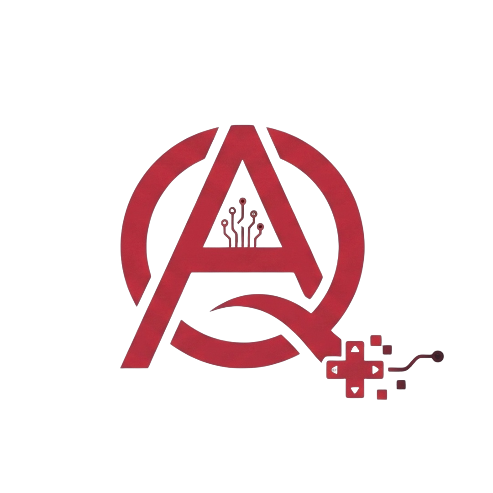

From chat-window chaos to a repeatable system that ships.

The shift that changed how software gets built.
“We built something. We didn't keep it.”
Prime · Understand · Refine · Execute.
One loop = one feature — not one project. Then loop back.
/prime → a context block read before any codeRULE — Never start a session without priming.
Stack: Next.js 14 · PostgreSQL · Tailwind
Style: TypeScript strict · no `any` · named exports
Constraints: no new dependencies without approval
Threat model: public-facing · no auth bypass
Goal: add the invoice export endpoint30 seconds of work that saves 2 hours of correction.
/understandIf you can't answer the question, the scope isn't ready.
/refine — audit → fix list → re-auditNot a vibe check. A real review.
~45 min for a scoped feature. Not a sprint — a loop.
A real PURE loop, end to end. Watch the decisions, not just the output.
/prime run$ /prime
# reading repo · package.json · tsconfig …
# context block generated → primer.md ✓
stack next@14 · postgres · tailwind // detected/understand runQ1 Per-user or per-account scope? → account
Q2 Export format — CSV, PDF, both? → CSV first
Q3 Who can trigger it — any role? → admin only
# scope locked. no guessing left./refine runreviewing AI output as a senior engineer…
⚠ 1 no pagination — 50k rows will OOM
⚠ 2 CSV injection on user-supplied fields
⚠ 3 missing 403 when role ≠ admin
→ 3 issues caught before commit/execute run▶ handed off to Claude Code · run #1
… building · tracked, not hovered …
✓ invoice export endpoint shipped
✓ tests green · diff reviewedPURE that survives chat-close and tool-switch.
~/ai-doctrine.mdA new agent picks this up and runs — no 20-minute re-brief.
handoff.md holdsMission: ship invoice export
Decisions locked: account-scope · CSV · admin-only
Current state: endpoint built · review pending
Next step: add pagination, then mergecd ~/Work/pure-skill-suite/skills && ./install.sh
What goes wrong — and the discipline that prevents it.
A paying client must never report a bug. Client feedback should be about new features only.
— Ahmed Qaddoura
Real questions, direct answers — then your next step.
git clone git@github.com:AQaddora/pure-skill-suite.git@VibeCodingArabic